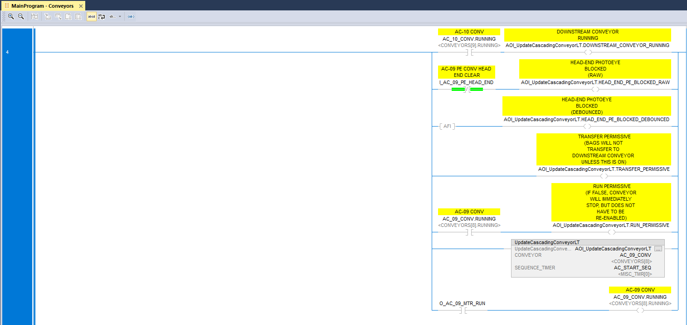

About Me
I'm a Controls Engineer and Software Developer with expertise in PLC programming, industrial automation, virtual simulation, and AI integration. I design comprehensive solutions combining real-world industrial systems with cutting-edge software applications. My work spans from ladder logic and fault handling to full-stack development and AI-powered applications.
Key Skills
- PLC Programming (Ladder Logic, Allen-Bradley)
- Virtual Simulation & 3D Modeling
- HMI/SCADA Design (FactoryTalk)
- Fault Detection & Handling
- Full-Stack Software Development
- AI/ML Integration (Ollama, Language Models)
- Database Design & Management
- Operator Training & Documentation
- Industrial Control Systems Integration
Featured Project

ConvSys — Virtual Conveyor Solutions
A complete turnkey conveyor system delivered as a service, including virtual design, PLC logic, HMI, and operator training.
View Project Details